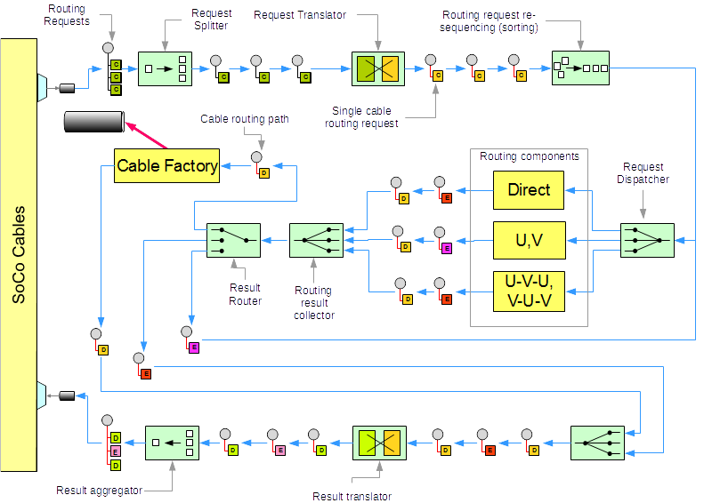
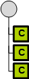
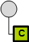
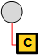
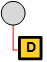
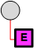
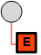

High Level Architecture and Data Flow
Conceptual view showing how routing requests flow through the routing system and get converted into cable paths and 3d cables.

Messages types flowing through the system
|  | Collection of cable routing requests. |
|  | A single cable routing request. The request specifies routing details such as:
|
|  | Routing request optimized for the routing engine |
|  | Successful Routing result. Contains ,among other cable parameters, the cable spine, layer used for routing, and routing method. Messages of this type will be routed to the Cable Factory for construction of the 3d cable part |
|  | Incomplete Routing result due to clearance violation of the cable being routed with respect to other parts or cables of the 3d model Messages of this type will be re-routed with different methods to get around the obstacle |
|  | Routing failed in an unrecoverable ways such as
|